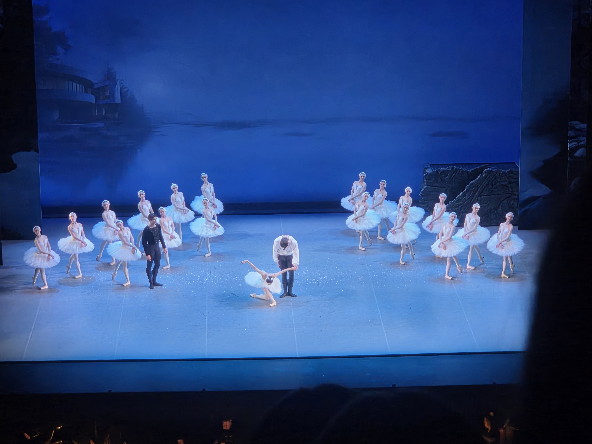

This is a double-header of firsts for me: the first blog post I've ever written, and also the first professional ballet I've ever seen. Growing up, my sister was a ballerina and I would go and watch her shows; yet sadly, I must have been too young and perhaps still too malformed then to truly appreciate the strength, technique, and emotion behind the art.
My afternoon at the ballet was an evocative experience; I found the performances of the principal ballerina Luna Sasaki, in the dual-roles of Oddette/Odile, and the synchronization of the swan maidens captivating. Choreographer Benjamin Pech gently modernized the relationship between male lead Siegfried and his best friend Benno, while retaining the elegance of the original story. The Edmonton Philharmonic Orchestra brilliantly and faithfully brought Tchaikovsky's original score, and the show, to life.

Luna Sasaki
One needs not even the faintest understanding of ballet technique to appreciate the skills of Sasaki. It was simply enthralling to watch her masterful stillness while 'on pointe' and the grace of her movements, when she allowed them, created a powerful delicacy to her dance; it was often as if she was a perfectly mechanical ballerina from some music box being spun around by invisible hands.
She was technically brilliant, I am almost certain, but she was also mesmerizingly musical. All that is left for me to say about Sasaki is that I hope to see her dance on pointe again!
The Swan Maidens
Oh, how I long for more swans! The show had a troupe of 18 white swans and in their synchronicity the formations during acts 2 and 4 were dazzling. What was displayed by the principal dancers as independent technical expertise was echoed by the swan troupe as collective elegance and critical timing. Taken as a whole, each dancer was one unit of a flawless real-time system. Through some combination of critical timing and meticulous attention to one another's position they made the blank stage into a canvas.
Adaptations
I do not know enough of the source productions, or of ballet in general, to have much to say about Pech's choreography; I will say only that his adaptation of the original story struck me as surgical. It seems apparent to me that Pech sought to highlight the relationship between Benno and Siegfried. The two are made to be so close through the choreography, and the motives behind Benno's betrayal are not quite as explicit. I am quite certain that Benno was made into the sorcerer who cursed the swan maidens which, if true, is an interesting development; I think on the one hand that it certainly deepens his motivations in betraying Siegfried. But, does it not also complicate the possibility of forgiveness? This leads me into the other major adaptation - only Odette dies. Act 4 ends with Siegfried firing his emblematic crossbow at Benno, who appears to dodge the shot, leaving Odette at the ultimate end of the arrow's flight.
Live Orchestra
From their dark pit beneath the hazy stage that became Swan Lake, the Edmonton Philharmonic Orchestra was the clock that pulsed every movement of the show. They played Pyotr Ilyich Tchaikovsky's original score and the experienced dancers allowed their motions to be controlled by the stream of emotion that came from below. It came with a fury at times, and it came placidly at times - but it came consistently paced and always at the right moments. I do not believe you could get the same experience without these two human machines working in tandem.
Summary
I was graced by having my partner beside me at the show; and I could feel the emotion of the story amplified so much more by being able to share it with her. And also, I thought of my sister. I was here connecting with an art form that she has loved so dearly and for so long, her art form. I will certainly continue to visit the Alberta Ballet, and to seek out another production of Swan Lake - for my own enjoyment and personal growth, to learn more about the art, to share in more moving moments with my partner, and to connect with my family.

